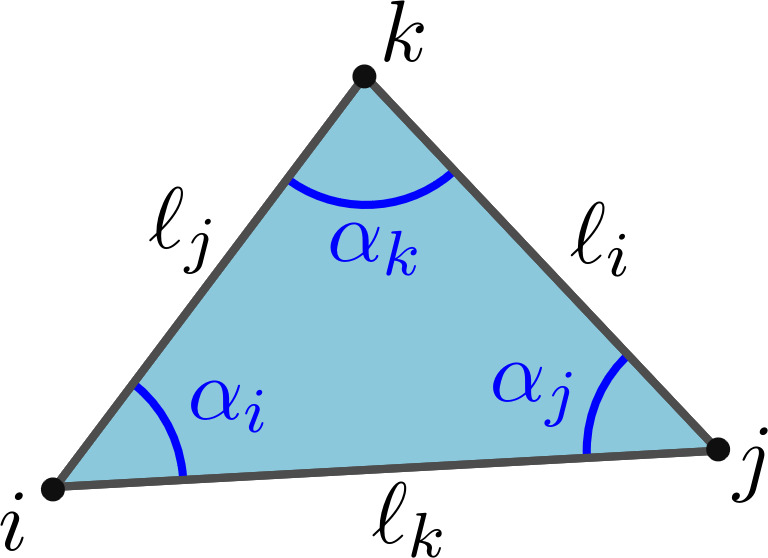
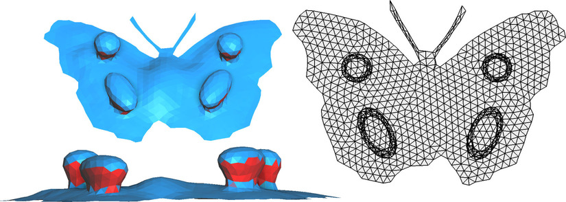
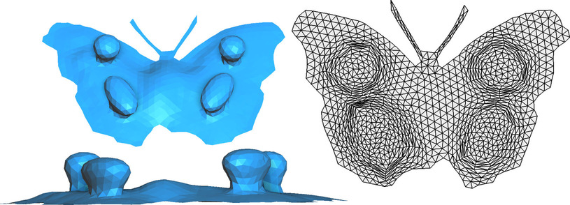
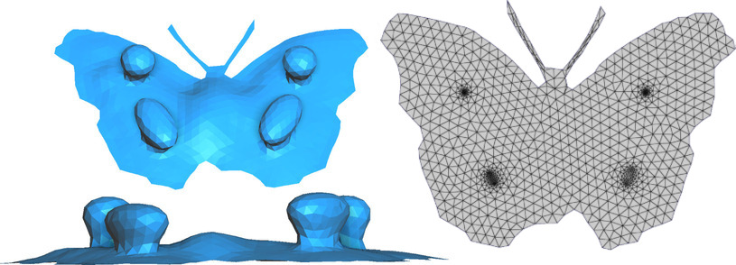

Cotan Embedding
Given a triangulation \(M=(V,T)\) of a disk-topology object and some initial \(uv\)-coordinates on the vertices of \(M\), this method optimizes the \(uv\)-coordinates under fixed boundary so that no triangle is inverted in the final \(uv\)-mapping.

The algorithms minimizes the energy \(E_T\) per triangle, defined as:
where:
The first term \(D_T\) of this expression is the dot product between the vector of cotangents and the vector of opposite squared lengths. If the cotangents correspond to the angles made by \(uv\)-coordinates, then this quantity is exactly the unsigned area of triangle \(T\). The other term is half the determinant of \(uv\)-coordinates of the triangle, that is to say the signed area \(A_T\) of triangle \(T\). The energy we consider per triangle is simply the difference between the two.
This energy can be minimized in two ways:
The direct optimization
The first strategy to minimize the energy is to put everything inside a non-linear solver like L-BFGS. However, this optimization may result in cotangents that do not form valid triangles, hence we need to introduce the constraint: \(\cot(\alpha_i)\cot(\alpha_j) + \cot(\alpha_j)\cot(\alpha_k) + \cot(\alpha_k)\cot(\alpha_i) = 1\) for all triangles \(T\).
Using Lagrange multipliers, we are able to reformulate the constrained problem as:
where \(\ell_i = (u_j - u_k)^2 + (v_j - v_k)^2\) is the squared distance between \(j\) and \(k\) in parameter space. This means that the final energy only depends on the \(uv\)-coordinates.
The iterative approach
Alternatively, the energy can be minimized by iteratively solving linear systems involving a cotan-Laplacian, where the cotangent are updated at each step to match the cotangents given by the \(uv\)-coordinates:
This approach is more stable and provides good results in more cases, but the final parametrizations are close to conformal and thus can exhibit high area distortions.
Result



References
- [1] Embedding a triangular graph within a given boundary, Yin Xu, Renjie Chen, Craig Gotsman and Ligang Liu, Computer Aided Geometric Design (2011)
- [2] Global Parametrization Algorithms for Quadmeshing, Guillaume Coiffier, PhD Manuscript (Chapter 3)
Usage
or, alternatively:
CotanEmbedding(mesh, uv_init, mode='bfgs', verbose=False, **kwargs)
Bases: BaseParametrization
Given a parametrization of a disk where boundary is fixed, we can optimize the difference between unsigned and signed areas of triangles to compute a parametrization that is foldover-free.
Warning
The input mesh should have the topology of a disk.
UV coordinates are computed per vertex and not per corner. See mouette.attributes.scatter_vertices_to_corners for conversion.
References
[1] Embedding a triangular graph within a given boundary, Xu et al. (2011)
Parameters:
| Name | Type | Description | Default |
|---|---|---|---|
mesh
|
SurfaceMesh
|
the supporting mesh. |
required |
uv_init
|
ArrayAttribute
|
array of initial uv-coordinates per vertices. np.array of shape (V,2) or mouette.ArrayAttribute object. |
required |
verbose
|
bool
|
verbose mode. Defaults to False. |
False
|
mode
|
str
|
optimization mode. Either "bfgs" or "alternate". Defaults to "bfgs". |
'bfgs'
|
Other Parameters:
| Name | Type | Description |
|---|---|---|
tutte_if_convex |
bool
|
if True and if the boundary of the shape is convex and mode=="alternate", will simply runs Tutte's embedding. Defaults to True |
solver_verbose |
bool
|
solver verbose mode. Defaults to False. |
flat_mesh
property
A flat representation of the mesh where uv-coordinates are copied to xy.
Returns:
| Name | Type | Description |
|---|---|---|
SurfaceMesh |
SurfaceMesh
|
the flat mesh |
run()
Runs the optimization
Raises:
| Type | Description |
|---|---|
Exception
|
Fails if the mesh is not a topological disk |
Exception
|
Fails if the mesh is not triangular |